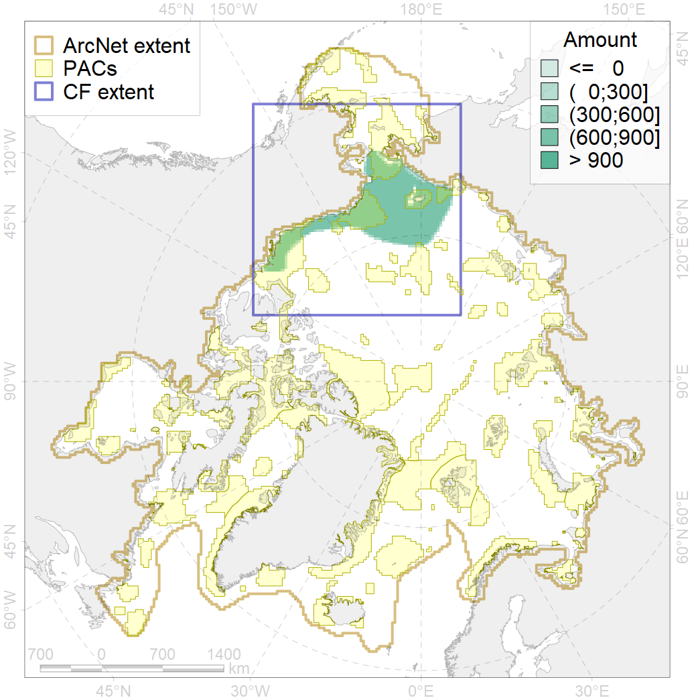
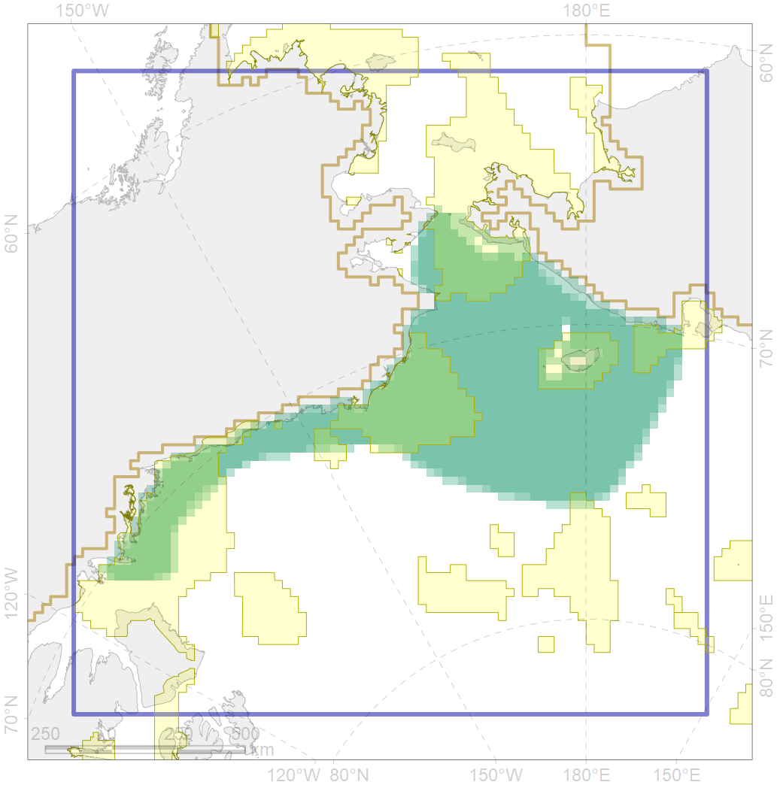

5105

| CF ID | 5105 |
| CF Name | Bowhead whale of the Bering-Chukchi-Beaufort population autumn distribution |
| Time Period | 2006–2011 |
| Source(s) | Quakenbush et al 2012 |
| Seasonality | September-November |
| Depth Horizon | 0-250 |
| Methodology | Satellite tagging |
| Author Name | Filatova |
| Notes | |
| Conservation Target Set in the Scenario | 0.288 |
| Conservation Target Achieved in the Scenario | 0.366 (Scenario: 127.1%) |
| PAC ID | Proportion in the PAC | Contribution to ArcNet Target Achievement | PAC’s Contribution to the Achieved Target |
|---|---|---|---|
| 5 | 7.2% | 21.8% | 17.1% |
| 7 | 3.8% | 12.8% | 10.1% |
| 8 | 2.3% | 5.4% | 4.2% |
| 57 | 0.3% | 0.6% | 0.4% |
| 60 | 14.6% | 44.6% | 35.1% |
| 61 | 0.1% | 0.3% | 0.3% |
| 62 | 9.5% | 31.8% | 25.0% |
| inner | 37.7% | 117.3% | 92.3% |
| outer | 62.3% | 9.8% | 7.7% |